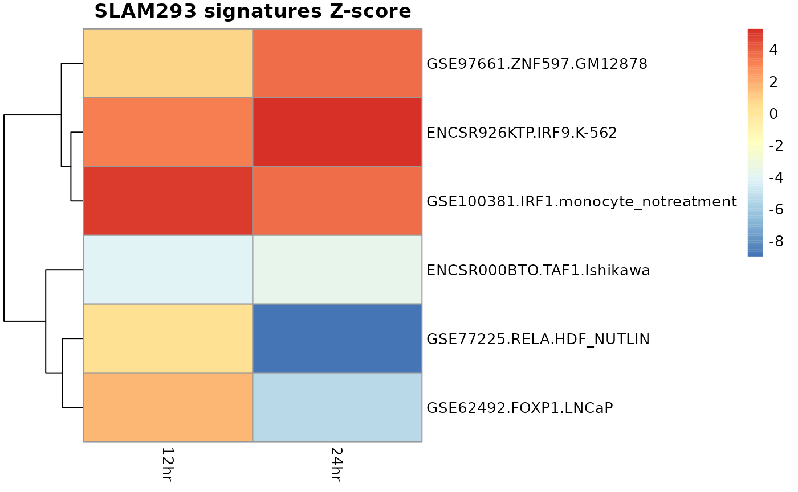

xcore vignette
Migdal
12/2021
xcore_vignette.RmdThis document introduces the xcore package and showcase its basic usage.
Gene expression modeling in context of rinderpest infection
Here we will use subset of 293SLAM rinderpest infection dataset from FANTOM5. This subset contains expression counts for 0, 12 and 24 hours post infection samples and only for a subset of FANTOM5 promoters. We can find this example data shipped with xcore package.
head(rinderpest_mini)## 00hr_rep1 00hr_rep2 00hr_rep3
## hg19::chr1:10003372..10003465,-;hg_10258.1 52 46 57
## hg19::chr1:10003486..10003551,+;hg_541.1 39 42 27
## hg19::chr1:100111580..100111773,+;hg_4181.1 1 0 2
## hg19::chr1:100232177..100232198,-;hg_13495.1 15 9 26
## hg19::chr1:100315613..100315691,+;hg_4187.1 95 109 110
## hg19::chr1:100435545..100435597,+;hg_4201.1 141 129 101
## 12hr_rep1 12hr_rep2 12hr_rep3
## hg19::chr1:10003372..10003465,-;hg_10258.1 54 50 53
## hg19::chr1:10003486..10003551,+;hg_541.1 35 30 40
## hg19::chr1:100111580..100111773,+;hg_4181.1 1 2 3
## hg19::chr1:100232177..100232198,-;hg_13495.1 20 16 13
## hg19::chr1:100315613..100315691,+;hg_4187.1 112 94 103
## hg19::chr1:100435545..100435597,+;hg_4201.1 132 106 125
## 24hr_rep1 24hr_rep2 24hr_rep3
## hg19::chr1:10003372..10003465,-;hg_10258.1 11 12 12
## hg19::chr1:10003486..10003551,+;hg_541.1 22 34 50
## hg19::chr1:100111580..100111773,+;hg_4181.1 0 1 1
## hg19::chr1:100232177..100232198,-;hg_13495.1 7 13 10
## hg19::chr1:100315613..100315691,+;hg_4187.1 43 74 89
## hg19::chr1:100435545..100435597,+;hg_4201.1 84 100 121First we need to construct a design matrix describing our experiment design.
design <- matrix(
data = c(1, 0, 0,
1, 0, 0,
1, 0, 0,
0, 1, 0,
0, 1, 0,
0, 1, 0,
0, 0, 1,
0, 0, 1,
0, 0, 1),
ncol = 3,
nrow = 9,
byrow = TRUE,
dimnames = list(
c(
"00hr_rep1",
"00hr_rep2",
"00hr_rep3",
"12hr_rep1",
"12hr_rep2",
"12hr_rep3",
"24hr_rep1",
"24hr_rep2",
"24hr_rep3"
),
c("00hr", "12hr", "24hr")
)
)
print(design)## 00hr 12hr 24hr
## 00hr_rep1 1 0 0
## 00hr_rep2 1 0 0
## 00hr_rep3 1 0 0
## 12hr_rep1 0 1 0
## 12hr_rep2 0 1 0
## 12hr_rep3 0 1 0
## 24hr_rep1 0 0 1
## 24hr_rep2 0 0 1
## 24hr_rep3 0 0 1Next, we need to preprocess the counts using prepareCountsForRegression function. Here, CAGE expression tags for each sample are filtered for lowly expressed promoters, normalized for the library size and transformed into counts per million (CPM). Finally, CPM are log2 transformed with addition of pseudo count 1. Moreover, we designate the base level samples, 0 hours after treatment in our example, from which basal expression level is calculated. This basal level will be used as a reference when modeling expression changes.
mae <- prepareCountsForRegression(counts = rinderpest_mini,
design = design,
base_lvl = "00hr")xcore models the expression as a function of molecular signatures. Such signatures can be constructed eg. from the known transcription factor binding sites (see Constructing molecular signatures section). Here, we will take advantage of pre-computed molecular signatures found in xcoredata package. Particularly, molecular signatures constructed from ReMap2020 against FANTOM5 annotation.
data(remap_promoters, package = "xcoredata")Molecular signature is a simple binary matrix indicating if transcription factor binding site was found or not in promoter vicinity.
print(remap_promoters[1:3, 1:3])## 3 x 3 sparse Matrix of class "dgCMatrix"
## ENCSR000AHD.CTCF.MCF-7
## hg19::chr1:10003314..10003321,-;hg_10256.1 1
## hg19::chr1:10003348..10003362,-;hg_10257.1 1
## hg19::chr1:10003372..10003465,-;hg_10258.1 1
## ENCSR000AHF.TAF1.MCF-7
## hg19::chr1:10003314..10003321,-;hg_10256.1 1
## hg19::chr1:10003348..10003362,-;hg_10257.1 1
## hg19::chr1:10003372..10003465,-;hg_10258.1 1
## ENCSR000AKB.CTCF.GM12878
## hg19::chr1:10003314..10003321,-;hg_10256.1 .
## hg19::chr1:10003348..10003362,-;hg_10257.1 .
## hg19::chr1:10003372..10003465,-;hg_10258.1 .To add signatures to our MultiAssayExperiment object we can use addSignatures function. As you add your signatures remember to give them unique names.
mae <- addSignatures(mae, remap = remap_promoters)When we examine newly added signatures, we can see that some of them does not overlap any of the promoters. On the other side, depending on the signatures quality, we could expect to see signatures that overlap all of the promoters.
## Min. 1st Qu. Median Mean 3rd Qu. Max.
## 0.0 272.2 1828.5 3008.1 5208.0 10224.0While, we do not provide detailed guidelines to signatures filtering, filtering out at least signatures overlapping no or all promoters is mandatory. Here, we filter signatures that overlap less than 5% or more than 95% of promoters using filterSignatures function.
mae <- filterSignatures(mae, min = 0.05, max = 0.95)Finally, we can run our expression modeling using modelGeneExpression function. modelGeneExpression can take advantage of parallelization to speedup its calculations, to use it we need to register parallel backend.
Our modeling will inherently contain some level of randomness due to using cross validation, here we set the seed so that our results can be replicated.
This step is time consuming as we need to train a separate model for each of our samples. To speed up the calculations we will lower number of folds used in cross-validation procedure from 10 to 5 using nfolds argument, which is internally passed to cv.glmnet function. Using 6 cores on Intel(R) Xeon(R) CPU E5-2680 v3 calculations took around 4 minutes to compute and used up to 25 GB RAM. If needed memory requirement could be brought down by using lower number of cores.
# register parallel backend, for R package it might be not possible to use more than 2 cores in its vignette
doMC::registerDoMC(cores = 2L)
# set seed
set.seed(314159265)
res <- modelGeneExpression(
mae = mae,
xnames = "remap",
nfolds = 5)Output returned by modelGeneExpression is a list with following elements:
-
regression_models- a list holdingcv.glmnetobjects for each sample. -
pvalues- list ofdata.frames for each sample, each holding signatures estimates, their estimated standard errors and p-values. -
replicate_avg- a matrix holding replicate average Z-scores with columns corresponding to groups in the design. This is likely the main output for most of the users.
Let’s have a look at replicate_avg matrix.
out <- res$replicate_avg$remap
ord <- order(abs(out[, "24hr"]), decreasing = TRUE)
pheatmap::pheatmap(
mat = head(out[ord, ]),
cluster_cols = FALSE,
main = "SLAM293 signatures Z-score"
)
Among others, our analysis indicates RELA and IRF9 as the top transcription factor associated with observed changes in expression. These transcription factors are known to play a role during measles infection, which is closely related to rinderpest (KEGG Measles pathway).
Moreover, Z-score sign indicate that promoters targeted by RELA tend to be downregulated, while those targeted by IRF9 tend to be upregulated.
Constructing molecular signatures
Constructing molecular signatures is as simple as intersecting promoters annotation with TFBS. For example here we downloaded Motevo predictions of binding sites from SwissRegulon website. The file is GFF format and we can read it using rtracklayer::import. After we read it into R we will get a GRanges object. For our purposes it is required that TF/motif name is held under name column.
Next we construct our molecular signatures matrix using FANTOM5 annotation found in xcoredata package. This is done using getInteractionMatrix function, where we can specify the ext parameter that will control how much promoters are extended in both directions before intersecting with binding data.
# obtain binding sites
motevo_hg38_f5 <- rtracklayer::import(
con = "https://swissregulon.unibas.ch/data/hg38_f5/hg38_sites_v1.gff.gz"
)
# TF / motif name must be stored as 'name'
motevo_hg38_f5$name <- motevo_hg38_f5$Motif
# obtain promoters annotation, *promoter name must be stored as 'name'
data("promoters_f5", package = "xcoredata")
# construct molecular signatures matrix
molecular_signature <- getInteractionMatrix(
a = promoters_f5,
b = motevo_hg38_f5,
ext = 500
)